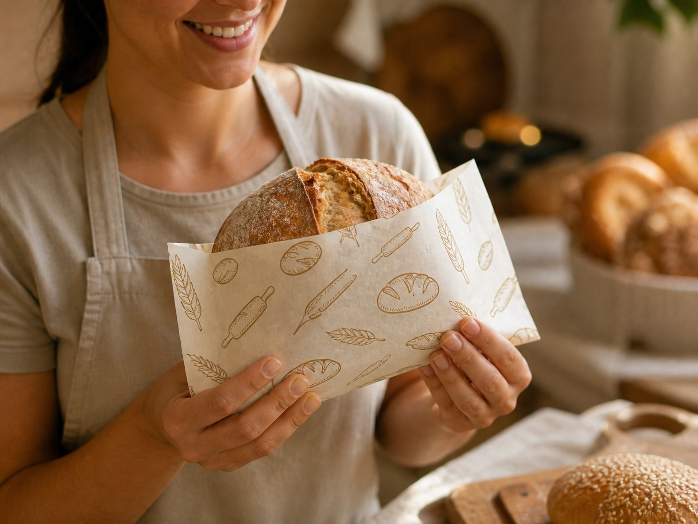

Pães e massas
Ideal para padarias, baguetes e pães artesanais
O Papelone pode envolver pães e massas, facilitando o manuseio sem precisar usar papel comum. Ele também ajuda na apresentação do produto em cestas, vitrines e entregas.